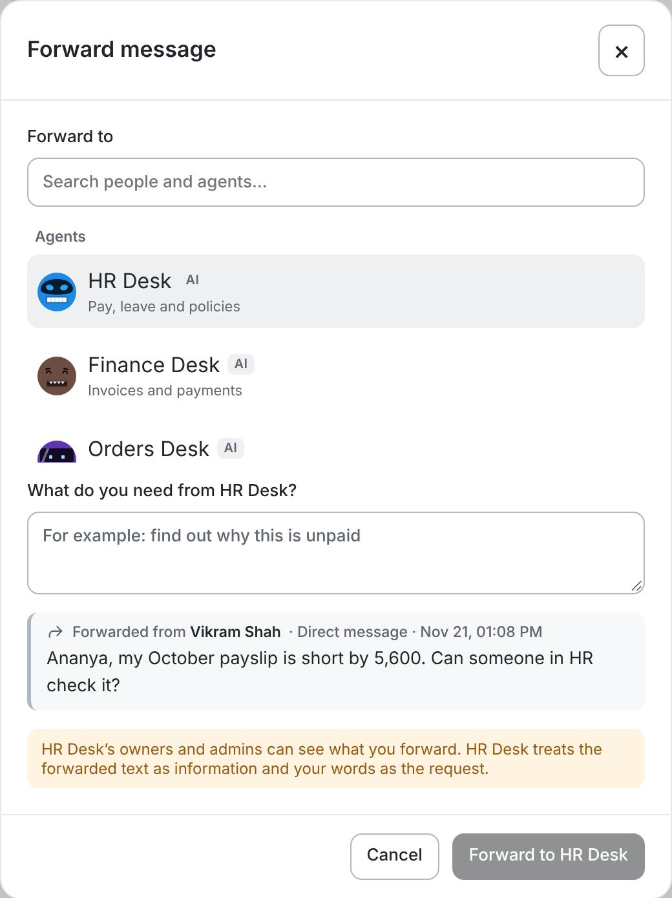

Cuckoo · Chat · 21 November 2026
Built on 21 November. The smaller window, both bug fixes, the message's files and your own documents are now in the app, with the three decisions taken as recommended. What follows is the review that led to it, as written before the work.
The rules behind Forward are solid. The window is where it falls short: it is tall, it has two real bugs, and it cannot carry files. Below is the built window next to a smaller one you can click through, then what I found and what it takes to add documents.
The right side works: search, pick someone, write, attach, forward. Nothing is sent or uploaded. Pick a message to compare.

Screenshot of the real client with sample data, 1280 × 800 window.
No file handy? . Keys: ↑ ↓ and Enter in the To field, Ctrl or ⌘ + Enter to forward.
| Part | Built | Proposed |
|---|---|---|
| Size | 520 wide. 636 tall when it opens, 696 with an agent chosen, up to the full window height for a long message. | 440 wide. 480 to 530 tall while you choose, 330 to 390 once someone is chosen, with a long message, your words and a document included. |
| Who it goes to | A search box, then a list that stays open and shows two and a half rows. Agents first, people below the fold. | One To field. People and agents you talked to most recently come first, one line each. Once chosen, the list closes and the person becomes a chip. |
| The message | Shown in full. A long message pushes the buttons down and the body scrolls. | Three lines with “Show all”. Its files are listed and can be left out one by one. |
| Your words | A separate labelled box above the message. | A box like Chat's own, with the paperclip and the Forward button inside it. |
| Who can see it | An amber box, two sentences. | One quiet line under the box. The second sentence becomes the box's question: “What do you need from HR Desk?” |
| Buttons | A footer with Cancel and Forward. | No footer. × and Esc close. An error still appears in a footer line. |
| Keyboard | Focus starts on Close. No arrow keys. | Focus starts in To. ↑ ↓ Enter choose, then focus moves to your message. |
Each item was checked in the real client with sample data, not read off the code alone.
The search box is meant to have focus when the window opens. Focus lands on the Close button instead. I typed “fin”: the search box stayed empty. I pressed Enter: the window closed.
Fix: pass the search box to the dialog's existing initialFocus. Small, and independent of any redesign.
A message with text and two PDFs forwards the text only, and the window never says the files are left behind. A message that is only a file forwards as the literal words “Shared files”, so the reader gets a block that says a file exists and no file.
Fix now: say “2 files are not forwarded” in the window, and refuse a message that is only files. Fix properly: carry the files (below).
Measured: 520 × 636 on open, 696 with an agent chosen. A long message makes it 768 in an 800-high window and the body scrolls. In a 600-high window it scrolls for any message. On a phone it takes 723 of 844 points.
It is 190 points tall, which is two and a half rows. With three agents, no person is visible until you scroll. After you choose HR Desk and then search for someone else, nothing is highlighted but the button still says “Forward to HR Desk”.
Arrow keys do not move through the list and Enter in the search box does not choose the first match. Each row is a separate Tab stop.
“Owners and admins can see what you forward” is true of every shared agent chat. In amber it reads as if something is wrong, on the most common path.
Chat already knows when an agent is paused or needs its owner. The forward list does not show it. I did not test what a forward to a paused agent does on the server.
Writing your own message with a forward already works: it is optional to a person and required to an agent. “Attach a document” is two different things, and they need different work.
Vikram sent a payslip PDF. Forwarding his message should take the PDF along, inside the forwarded block, with a way to leave a file out.
You forward Vikram's message to HR Desk and add the leave policy yourself. These sit under your words, outside the forwarded block, like any attachment.
For an agent, the same line holds as for text: files from the forwarded message are information someone else supplied; your words, and the documents you add, are the request.
| Question | I recommend | The other choice |
|---|---|---|
| Do a message's files go along by default? | Yes, each with an × to leave it out. Leaving them out silently is today's bug. | Off by default, ticked to include. Safer against oversharing, one more click every time. |
| Who is listed first? | Whoever you talked to most recently, people and agents mixed. Typing searches everyone. | Agents first, as approved on 16 November. Keeps agents prominent, hides people. |
| How loud is “owners and admins can see”? | One quiet line, always shown for a shared agent. | Keep the amber box. Louder, and it costs about 60 points of height. |
| Step | What | Touches |
|---|---|---|
| 1 | Fix focus. Say when files are left behind, and refuse a files-only message. Worth doing whatever you decide about the rest. | Client, one server check |
| 2 | The smaller window: To field with chip, recent first, three-line message, box with Forward inside, quiet line, keyboard. | Client only |
| 3 | Carry the message's files: copy them on the server, show them in the forwarded block, tell agents they are information. | Server, database, client |
| 4 | Attach your own documents from the forward window. | Client, one new field on the forward request |
Still not covered after this: forwarding into a channel or group, to several people at once, or several messages together.